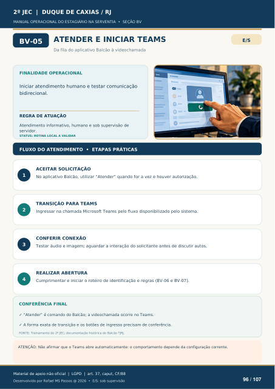

ATENDER E INICIAR TEAMS
Da fila do aplicativo Balcão à videochamada
FINALIDADE OPERACIONAL
Iniciar atendimento humano e testar comunicação bidirecional.
REGRA DE ATUAÇÃO
Atendimento informativo, humano e sob supervisão de servidor.
STATUS: ROTINA LOCAL A VALIDAR
FLUXO DO ATENDIMENTO • ETAPAS PRÁTICAS
ACEITAR SOLICITAÇÃO
No aplicativo Balcão, utilizar “Atender” quando for a vez e houver autorização.
TRANSIÇÃO PARA TEAMS
Ingressar na chamada Microsoft Teams pelo fluxo disponibilizado pelo sistema.
CONFERIR CONEXÃO
Testar áudio e imagem; aguardar a interação do solicitante antes de discutir autos.
REALIZAR ABERTURA
Cumprimentar e iniciar o roteiro de identificação e regras (BV-06 e BV-07).
CONFERÊNCIA FINAL
“Atender” é comando do Balcão; a videochamada ocorre no Teams.
A forma exata de transição e os botões de ingresso precisam de conferência.
FONTE: Treinamento do 2º JEC; documentação histórica do Balcão TJRJ.
ATENÇÃO: Não afirmar que o Teams abre automaticamente: o comportamento depende da configuração corrente.
Ver também o infográfico original (página 96)
